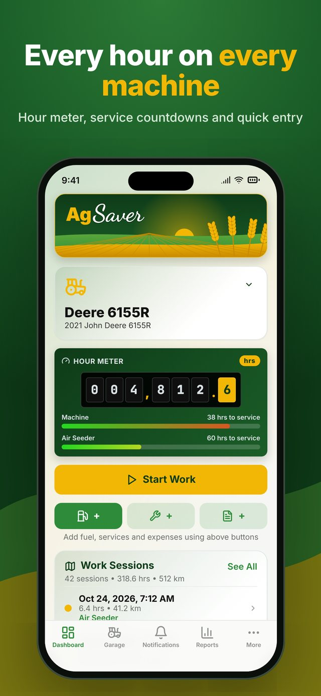
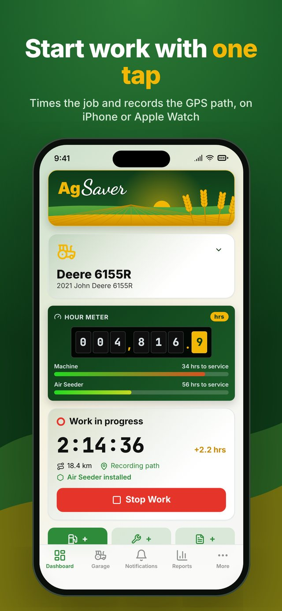
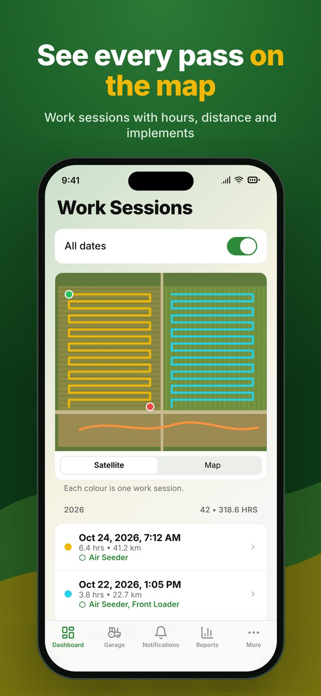
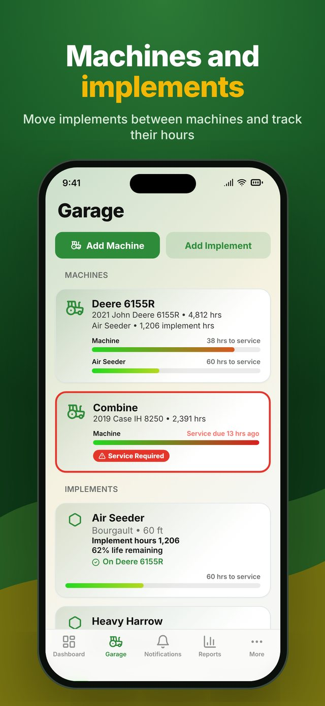
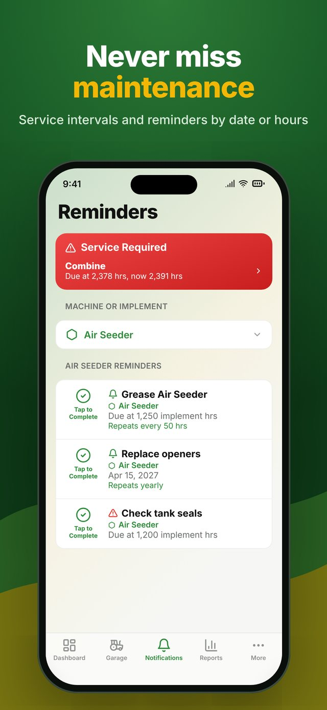
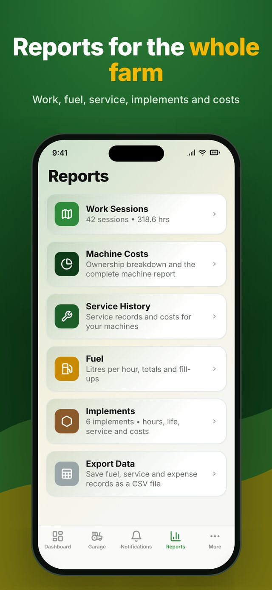
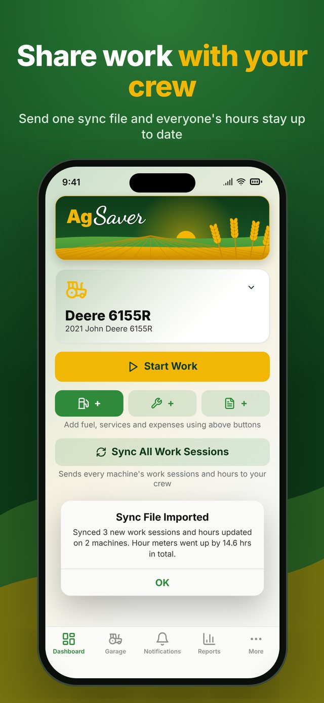
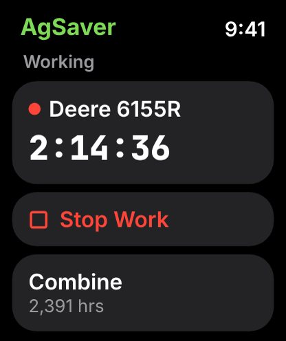

AgSaver
The smart farm machine manager.
AgSaver keeps track of the hours, work, servicing and costs of your tractors, harvesters and implements, and maps your fields, sprays, crops and yields, so you always know what each machine and each field is doing, what it costs and when it is due for service.
Take a look








What AgSaver does
Hour meter
Every machine has a live hour meter with countdowns to its next service, and a red alert when anything is overdue.
One-tap work sessions
Start and stop work from iPhone or Apple Watch. AgSaver times the job, adds the hours and can pause itself when the machine sits idle.
Work maps
Record the path your machine travels and see where you worked, pass by pass, with this year's and last year's work on one farm map.
My Fields
Outline fields by tapping corners on the map or driving the edge, or import boundaries from John Deere Operations Center, Climate FieldView or Google Earth (shapefile, KML or GeoJSON). Sort them into groups.
Acres worked
Work sessions are matched to your fields automatically, with acres covered in each. Lap tracking shows how many acres are still left inside the field as you go.
A–B guidance lines
Set an A–B line and AgSaver shows which pass you are on and how far you are from it, based on your implement's working width.
Weather and spray window
An hour-by-hour spray window from wind, temperature, humidity and rain, and the weather saved with every work session.
Spray and input records
Log sprays, fertilizer and seed by field, fill in the wind and temperature from Apple Weather, and share a spray records PDF for the year.
Crops, yield and profit
Record each field's crop, variety, harvest and costs every year to see revenue, costs and profit per field, along with its crop history.
Machines and implements
Move implements between machines and track their own hours, life expectancy and costs.
Parts and filters
Keep part numbers for every machine and implement, so you have the right filters and belts at hand at the dealer.
Service and reminders
Set service intervals by hours or date, get reminded, and mark jobs done when they are finished.
Fuel and expenses
Log fuel, parts and running costs per machine, including litres per hour and fuel cost per acre.
Farm and field reports
Work, fuel, service, implement and ownership cost reports, plus field PDFs on satellite imagery with KML boundaries for your mapping software.
Crew sharing
Send one sync file to keep everyone's hours and work up to date, or start a crew to see each other's machines live on the work map.
Export everything
Export one zip with the complete database, photos, receipts, GPS paths as GPX and a spreadsheet, or records as CSV for Excel or Numbers.
Your privacy
Location is used while a work session is running, to map where you worked, and to look up the weather for your farm. Your data syncs through your own private iCloud and is never sent to me. If you join a crew, your machine's position is shared only with people who have your crew code, and only while you are working.